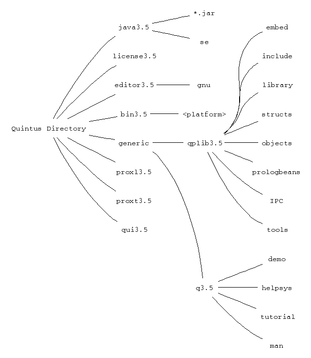

bin3.5
sun4-5 contains the executables installed for a Sun4
running SunOS 5.x. When the manual refers to runtime-directory, it is
the subdirectories of bin3.5, such as sun4-5, that are
referred to. The runtime-directory for your platform is the default
runtime_directory Prolog flag. These directories are generated
automatically for each platform during the installation procedure.
generic
editor3.5
gnu,
which contains .el and .elc files for the GNU Emacs
interface. See ema-ove.
qui3.5
proxl3.5
proxt3.5
dbi, flex, etc.
license3.5
java3.5
The subdirectories of generic are the library directory,
qplib3.5, and the Quintus information directory, q3.5.
qplib3.5
embed and tools directories. The contents of the
library directory are detailed in lib-bas.
q3.5
demo
helpsys
man
tutorial